Hol kezdd
- Nyisd meg ezt: Varrási és szabásminta-igazítási útmutató. Elmagyarázza, hogyan nyomtasd a szabásmintákat és hogyan végy méretet.
- Válassz egy szabásmintát a kollekcióból, és töltsd le A4 részekre bontva (otthoni nyomtatáshoz) vagy plotterre (egyetlen lap, valós méretben).
- Nyomtass 100%-on („Valós méret”), és mérd meg az ellenőrző négyzetet: pontosan 10 × 10 cm legyen.
- Mielőtt a végleges anyagot használnád, szabd ki az első próbadarabodat.
Varrási útmutatók
Tanácsok a varráshoz, a szabásminta szerkesztéséhez, az igazításhoz és a kidolgozáshoz, valamint az I., a II. és a III. ajándék.
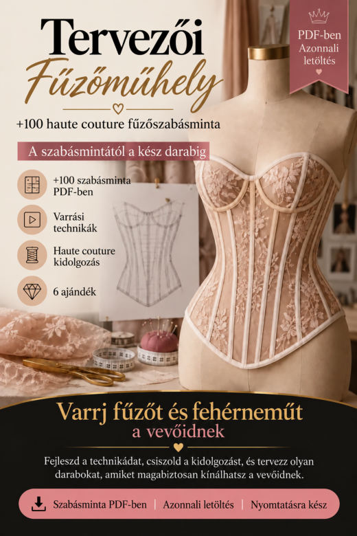
Varrási és szabásminta-igazítási útmutatóA szabásminták nyomtatása és összeállítása, méretvétel, a szabásminta igazítása más méretekre, próbadarab, pontos varrás, gondos kidolgozás és a méretre készült darabok bemutatása.
PDF megnyitása- Átlátszó tüll: varrási útmutató
Hogyan stabilizáld, szabd és varrd a tüllt kevesebb torzulással és több kontrollal.
PDF megnyitása - Ellenőrzőlista a profi kidolgozáshoz
Azok a részletek, amelyek fölött a legkönnyebb elsiklani: nézd át őket, mielőtt lefotózod vagy átadod a modellt.
PDF megnyitása 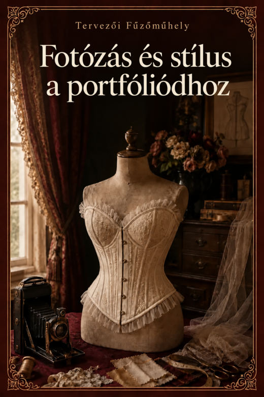
Fotózás és stílus a portfóliódhozFény, háttér, 8 fotó minden modellről, stílus, és hogyan építs portfóliót telefonnal.
PDF megnyitása
Egy szabásminta sem egyezik. Próbálj másik szót.
Tervezői Fűzőműhely · 110 fűzőszabásminta
110 szabásminta PDF-ben · mindegyik A4 részekre bontva és plotterre, valós méretben.
Fűzős derékpánt 8
 FŰZŐ 001fűzős derékpánt · 4 panel · egyenes szél
FŰZŐ 001fűzős derékpánt · 4 panel · egyenes szél FŰZŐ 002fűzős derékpánt · 4 panel · csúcsos szél
FŰZŐ 002fűzős derékpánt · 4 panel · csúcsos szél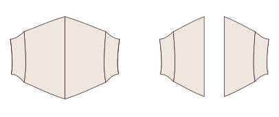
FŰZŐ 003fűzős derékpánt · 4 panel · íves szél FŰZŐ 004fűzős derékpánt · 4 panel · aszimmetrikus szél
FŰZŐ 004fűzős derékpánt · 4 panel · aszimmetrikus szél FŰZŐ 005fűzős derékpánt · 5 panel · egyenes szél
FŰZŐ 005fűzős derékpánt · 5 panel · egyenes szél FŰZŐ 006fűzős derékpánt · 5 panel · csúcsos szél
FŰZŐ 006fűzős derékpánt · 5 panel · csúcsos szél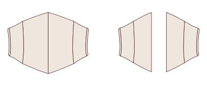
FŰZŐ 007fűzős derékpánt · 5 panel · íves szél FŰZŐ 008fűzős derékpánt · 5 panel · aszimmetrikus szél
FŰZŐ 008fűzős derékpánt · 5 panel · aszimmetrikus szél
Derékszűkítő fűző 12
 FŰZŐ 009derékszűkítő fűző · 5 panel · egyenes szél
FŰZŐ 009derékszűkítő fűző · 5 panel · egyenes szél FŰZŐ 010derékszűkítő fűző · 5 panel · csúcsos szél
FŰZŐ 010derékszűkítő fűző · 5 panel · csúcsos szél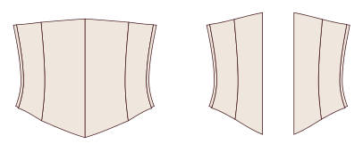
FŰZŐ 011derékszűkítő fűző · 5 panel · íves szél FŰZŐ 012derékszűkítő fűző · 5 panel · hosszított szél a csípő fölött
FŰZŐ 012derékszűkítő fűző · 5 panel · hosszított szél a csípő fölött FŰZŐ 013derékszűkítő fűző · 6 panel · egyenes szél
FŰZŐ 013derékszűkítő fűző · 6 panel · egyenes szél FŰZŐ 014derékszűkítő fűző · 6 panel · csúcsos szél
FŰZŐ 014derékszűkítő fűző · 6 panel · csúcsos szél FŰZŐ 015derékszűkítő fűző · 6 panel · íves szél
FŰZŐ 015derékszűkítő fűző · 6 panel · íves szél FŰZŐ 016derékszűkítő fűző · 6 panel · hosszított szél a csípő fölött
FŰZŐ 016derékszűkítő fűző · 6 panel · hosszított szél a csípő fölött FŰZŐ 017derékszűkítő fűző · 7 panel · egyenes szél
FŰZŐ 017derékszűkítő fűző · 7 panel · egyenes szél FŰZŐ 018derékszűkítő fűző · 7 panel · csúcsos szél
FŰZŐ 018derékszűkítő fűző · 7 panel · csúcsos szél FŰZŐ 019derékszűkítő fűző · 7 panel · íves szél
FŰZŐ 019derékszűkítő fűző · 7 panel · íves szél FŰZŐ 020derékszűkítő fűző · 7 panel · hosszított szél a csípő fölött
FŰZŐ 020derékszűkítő fűző · 7 panel · hosszított szél a csípő fölött
Mell alatti · klasszikus 16
 FŰZŐ 021klasszikus mell alatti fűző · 5 panel · egyenes szél
FŰZŐ 021klasszikus mell alatti fűző · 5 panel · egyenes szél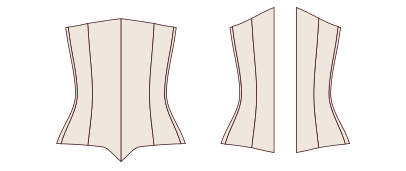
FŰZŐ 022klasszikus mell alatti fűző · 5 panel · csúcsos szél FŰZŐ 023klasszikus mell alatti fűző · 5 panel · íves szél a csípő fölött
FŰZŐ 023klasszikus mell alatti fűző · 5 panel · íves szél a csípő fölött FŰZŐ 024klasszikus mell alatti fűző · 5 panel · kettős csúcsos szél
FŰZŐ 024klasszikus mell alatti fűző · 5 panel · kettős csúcsos szél FŰZŐ 025klasszikus mell alatti fűző · 6 panel · egyenes szél
FŰZŐ 025klasszikus mell alatti fűző · 6 panel · egyenes szél FŰZŐ 026klasszikus mell alatti fűző · 6 panel · csúcsos szél
FŰZŐ 026klasszikus mell alatti fűző · 6 panel · csúcsos szél FŰZŐ 027klasszikus mell alatti fűző · 6 panel · íves szél a csípő fölött
FŰZŐ 027klasszikus mell alatti fűző · 6 panel · íves szél a csípő fölött FŰZŐ 028klasszikus mell alatti fűző · 6 panel · kettős csúcsos szél
FŰZŐ 028klasszikus mell alatti fűző · 6 panel · kettős csúcsos szél FŰZŐ 029klasszikus mell alatti fűző · 7 panel · egyenes szél
FŰZŐ 029klasszikus mell alatti fűző · 7 panel · egyenes szél FŰZŐ 030klasszikus mell alatti fűző · 7 panel · csúcsos szél
FŰZŐ 030klasszikus mell alatti fűző · 7 panel · csúcsos szél FŰZŐ 031klasszikus mell alatti fűző · 7 panel · íves szél a csípő fölött
FŰZŐ 031klasszikus mell alatti fűző · 7 panel · íves szél a csípő fölött FŰZŐ 032klasszikus mell alatti fűző · 7 panel · kettős csúcsos szél
FŰZŐ 032klasszikus mell alatti fűző · 7 panel · kettős csúcsos szél FŰZŐ 033klasszikus mell alatti fűző · 8 panel · egyenes szél
FŰZŐ 033klasszikus mell alatti fűző · 8 panel · egyenes szél FŰZŐ 034klasszikus mell alatti fűző · 8 panel · csúcsos szél
FŰZŐ 034klasszikus mell alatti fűző · 8 panel · csúcsos szél FŰZŐ 035klasszikus mell alatti fűző · 8 panel · íves szél a csípő fölött
FŰZŐ 035klasszikus mell alatti fűző · 8 panel · íves szél a csípő fölött FŰZŐ 036klasszikus mell alatti fűző · 8 panel · kettős csúcsos szél
FŰZŐ 036klasszikus mell alatti fűző · 8 panel · kettős csúcsos szél
Mell alatti · viktoriánus 10
 FŰZŐ 037viktoriánus mell alatti fűző · 6 panel · 6 cm szűkítés
FŰZŐ 037viktoriánus mell alatti fűző · 6 panel · 6 cm szűkítés FŰZŐ 038viktoriánus mell alatti fűző · 6 panel · 8 cm szűkítés
FŰZŐ 038viktoriánus mell alatti fűző · 6 panel · 8 cm szűkítés FŰZŐ 039viktoriánus mell alatti fűző · 7 panel · 6 cm szűkítés
FŰZŐ 039viktoriánus mell alatti fűző · 7 panel · 6 cm szűkítés FŰZŐ 040viktoriánus mell alatti fűző · 7 panel · 8 cm szűkítés
FŰZŐ 040viktoriánus mell alatti fűző · 7 panel · 8 cm szűkítés FŰZŐ 041viktoriánus mell alatti fűző · 8 panel · 6 cm szűkítés
FŰZŐ 041viktoriánus mell alatti fűző · 8 panel · 6 cm szűkítés FŰZŐ 042viktoriánus mell alatti fűző · 8 panel · 8 cm szűkítés
FŰZŐ 042viktoriánus mell alatti fűző · 8 panel · 8 cm szűkítés FŰZŐ 043viktoriánus mell alatti fűző · 9 panel · 6 cm szűkítés
FŰZŐ 043viktoriánus mell alatti fűző · 9 panel · 6 cm szűkítés FŰZŐ 044viktoriánus mell alatti fűző · 9 panel · 8 cm szűkítés
FŰZŐ 044viktoriánus mell alatti fűző · 9 panel · 8 cm szűkítés FŰZŐ 045viktoriánus mell alatti fűző · 10 panel · 6 cm szűkítés
FŰZŐ 045viktoriánus mell alatti fűző · 10 panel · 6 cm szűkítés FŰZŐ 046viktoriánus mell alatti fűző · 10 panel · 8 cm szűkítés
FŰZŐ 046viktoriánus mell alatti fűző · 10 panel · 8 cm szűkítés
Mell alatti · edwardiánus 8
 FŰZŐ 047edwardiánus mell alatti fűző egyenes elejével · 6 panel · egyenes szél
FŰZŐ 047edwardiánus mell alatti fűző egyenes elejével · 6 panel · egyenes szél FŰZŐ 048edwardiánus mell alatti fűző egyenes elejével · 6 panel · csúcsos szél
FŰZŐ 048edwardiánus mell alatti fűző egyenes elejével · 6 panel · csúcsos szél FŰZŐ 049edwardiánus mell alatti fűző egyenes elejével · 7 panel · egyenes szél
FŰZŐ 049edwardiánus mell alatti fűző egyenes elejével · 7 panel · egyenes szél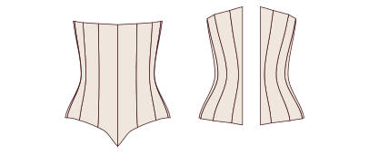
FŰZŐ 050edwardiánus mell alatti fűző egyenes elejével · 7 panel · csúcsos szél FŰZŐ 051edwardiánus mell alatti fűző egyenes elejével · 8 panel · egyenes szél
FŰZŐ 051edwardiánus mell alatti fűző egyenes elejével · 8 panel · egyenes szél FŰZŐ 052edwardiánus mell alatti fűző egyenes elejével · 8 panel · csúcsos szél
FŰZŐ 052edwardiánus mell alatti fűző egyenes elejével · 8 panel · csúcsos szél FŰZŐ 053edwardiánus mell alatti fűző egyenes elejével · 9 panel · egyenes szél
FŰZŐ 053edwardiánus mell alatti fűző egyenes elejével · 9 panel · egyenes szél FŰZŐ 054edwardiánus mell alatti fűző egyenes elejével · 9 panel · csúcsos szél
FŰZŐ 054edwardiánus mell alatti fűző egyenes elejével · 9 panel · csúcsos szél
Mell alatti · hosszú 8
 FŰZŐ 055hosszú mell alatti fűző a csípőig · 6 panel · busk
FŰZŐ 055hosszú mell alatti fűző a csípőig · 6 panel · busk FŰZŐ 056hosszú mell alatti fűző a csípőig · 6 panel · elöl fűzéssel
FŰZŐ 056hosszú mell alatti fűző a csípőig · 6 panel · elöl fűzéssel FŰZŐ 057hosszú mell alatti fűző a csípőig · 7 panel · busk
FŰZŐ 057hosszú mell alatti fűző a csípőig · 7 panel · busk FŰZŐ 058hosszú mell alatti fűző a csípőig · 7 panel · elöl fűzéssel
FŰZŐ 058hosszú mell alatti fűző a csípőig · 7 panel · elöl fűzéssel FŰZŐ 059hosszú mell alatti fűző a csípőig · 8 panel · busk
FŰZŐ 059hosszú mell alatti fűző a csípőig · 8 panel · busk FŰZŐ 060hosszú mell alatti fűző a csípőig · 8 panel · elöl fűzéssel
FŰZŐ 060hosszú mell alatti fűző a csípőig · 8 panel · elöl fűzéssel FŰZŐ 061hosszú mell alatti fűző a csípőig · 9 panel · busk
FŰZŐ 061hosszú mell alatti fűző a csípőig · 9 panel · busk FŰZŐ 062hosszú mell alatti fűző a csípőig · 9 panel · elöl fűzéssel
FŰZŐ 062hosszú mell alatti fűző a csípőig · 9 panel · elöl fűzéssel
Mell fölötti · egyenes kivágás 10
 FŰZŐ 063mell fölötti fűző egyenes kivágással · 6 panel · busk
FŰZŐ 063mell fölötti fűző egyenes kivágással · 6 panel · busk FŰZŐ 064mell fölötti fűző egyenes kivágással · 6 panel · elöl fűzéssel
FŰZŐ 064mell fölötti fűző egyenes kivágással · 6 panel · elöl fűzéssel FŰZŐ 065mell fölötti fűző egyenes kivágással · 7 panel · busk
FŰZŐ 065mell fölötti fűző egyenes kivágással · 7 panel · busk FŰZŐ 066mell fölötti fűző egyenes kivágással · 7 panel · elöl fűzéssel
FŰZŐ 066mell fölötti fűző egyenes kivágással · 7 panel · elöl fűzéssel FŰZŐ 067mell fölötti fűző egyenes kivágással · 8 panel · busk
FŰZŐ 067mell fölötti fűző egyenes kivágással · 8 panel · busk FŰZŐ 068mell fölötti fűző egyenes kivágással · 8 panel · elöl fűzéssel
FŰZŐ 068mell fölötti fűző egyenes kivágással · 8 panel · elöl fűzéssel FŰZŐ 069mell fölötti fűző egyenes kivágással · 9 panel · busk
FŰZŐ 069mell fölötti fűző egyenes kivágással · 9 panel · busk FŰZŐ 070mell fölötti fűző egyenes kivágással · 9 panel · elöl fűzéssel
FŰZŐ 070mell fölötti fűző egyenes kivágással · 9 panel · elöl fűzéssel FŰZŐ 071mell fölötti fűző egyenes kivágással · 10 panel · busk
FŰZŐ 071mell fölötti fűző egyenes kivágással · 10 panel · busk FŰZŐ 072mell fölötti fűző egyenes kivágással · 10 panel · elöl fűzéssel
FŰZŐ 072mell fölötti fűző egyenes kivágással · 10 panel · elöl fűzéssel
Mell fölötti · szív alakú kivágás 10
 FŰZŐ 073mell fölötti fűző szív alakú kivágással · 6 panel · egyenes szél
FŰZŐ 073mell fölötti fűző szív alakú kivágással · 6 panel · egyenes szél FŰZŐ 074mell fölötti fűző szív alakú kivágással · 6 panel · csúcsos szél
FŰZŐ 074mell fölötti fűző szív alakú kivágással · 6 panel · csúcsos szél FŰZŐ 075mell fölötti fűző szív alakú kivágással · 7 panel · egyenes szél
FŰZŐ 075mell fölötti fűző szív alakú kivágással · 7 panel · egyenes szél FŰZŐ 076mell fölötti fűző szív alakú kivágással · 7 panel · csúcsos szél
FŰZŐ 076mell fölötti fűző szív alakú kivágással · 7 panel · csúcsos szél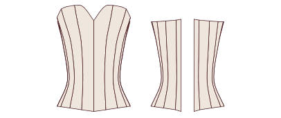
FŰZŐ 077mell fölötti fűző szív alakú kivágással · 8 panel · egyenes szél FŰZŐ 078mell fölötti fűző szív alakú kivágással · 8 panel · csúcsos szél
FŰZŐ 078mell fölötti fűző szív alakú kivágással · 8 panel · csúcsos szél FŰZŐ 079mell fölötti fűző szív alakú kivágással · 9 panel · egyenes szél
FŰZŐ 079mell fölötti fűző szív alakú kivágással · 9 panel · egyenes szél FŰZŐ 080mell fölötti fűző szív alakú kivágással · 9 panel · csúcsos szél
FŰZŐ 080mell fölötti fűző szív alakú kivágással · 9 panel · csúcsos szél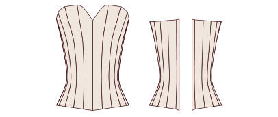
FŰZŐ 081mell fölötti fűző szív alakú kivágással · 10 panel · egyenes szél FŰZŐ 082mell fölötti fűző szív alakú kivágással · 10 panel · csúcsos szél
FŰZŐ 082mell fölötti fűző szív alakú kivágással · 10 panel · csúcsos szél
Mell fölötti · V-kivágás 8
 FŰZŐ 083mell fölötti fűző enyhe V-kivágással · 6 panel
FŰZŐ 083mell fölötti fűző enyhe V-kivágással · 6 panel FŰZŐ 084mell fölötti fűző mély V-kivágással · 6 panel
FŰZŐ 084mell fölötti fűző mély V-kivágással · 6 panel FŰZŐ 085mell fölötti fűző enyhe V-kivágással · 7 panel
FŰZŐ 085mell fölötti fűző enyhe V-kivágással · 7 panel FŰZŐ 086mell fölötti fűző mély V-kivágással · 7 panel
FŰZŐ 086mell fölötti fűző mély V-kivágással · 7 panel FŰZŐ 087mell fölötti fűző enyhe V-kivágással · 8 panel
FŰZŐ 087mell fölötti fűző enyhe V-kivágással · 8 panel FŰZŐ 088mell fölötti fűző mély V-kivágással · 8 panel
FŰZŐ 088mell fölötti fűző mély V-kivágással · 8 panel FŰZŐ 089mell fölötti fűző enyhe V-kivágással · 9 panel
FŰZŐ 089mell fölötti fűző enyhe V-kivágással · 9 panel FŰZŐ 090mell fölötti fűző mély V-kivágással · 9 panel
FŰZŐ 090mell fölötti fűző mély V-kivágással · 9 panel
Mell fölötti · balconette 8
 FŰZŐ 091mell fölötti fűző balconette kivágással · 6 panel · egyenes szél
FŰZŐ 091mell fölötti fűző balconette kivágással · 6 panel · egyenes szél FŰZŐ 092mell fölötti fűző balconette kivágással · 6 panel · csúcsos szél
FŰZŐ 092mell fölötti fűző balconette kivágással · 6 panel · csúcsos szél FŰZŐ 093mell fölötti fűző balconette kivágással · 7 panel · egyenes szél
FŰZŐ 093mell fölötti fűző balconette kivágással · 7 panel · egyenes szél FŰZŐ 094mell fölötti fűző balconette kivágással · 7 panel · csúcsos szél
FŰZŐ 094mell fölötti fűző balconette kivágással · 7 panel · csúcsos szél FŰZŐ 095mell fölötti fűző balconette kivágással · 8 panel · egyenes szél
FŰZŐ 095mell fölötti fűző balconette kivágással · 8 panel · egyenes szél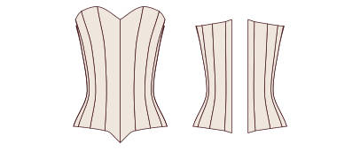
FŰZŐ 096mell fölötti fűző balconette kivágással · 8 panel · csúcsos szél FŰZŐ 097mell fölötti fűző balconette kivágással · 9 panel · egyenes szél
FŰZŐ 097mell fölötti fűző balconette kivágással · 9 panel · egyenes szél FŰZŐ 098mell fölötti fűző balconette kivágással · 9 panel · csúcsos szél
FŰZŐ 098mell fölötti fűző balconette kivágással · 9 panel · csúcsos szél
Fűzőtop vállpánttal 6
 FŰZŐ 099fűzőtop keskeny vállpánttal · 6 panel
FŰZŐ 099fűzőtop keskeny vállpánttal · 6 panel FŰZŐ 100fűzőtop széles vállpánttal · 6 panel
FŰZŐ 100fűzőtop széles vállpánttal · 6 panel FŰZŐ 101fűzőtop keskeny vállpánttal · 7 panel
FŰZŐ 101fűzőtop keskeny vállpánttal · 7 panel FŰZŐ 102fűzőtop széles vállpánttal · 7 panel
FŰZŐ 102fűzőtop széles vállpánttal · 7 panel FŰZŐ 103fűzőtop keskeny vállpánttal · 8 panel
FŰZŐ 103fűzőtop keskeny vállpánttal · 8 panel FŰZŐ 104fűzőtop széles vállpánttal · 8 panel
FŰZŐ 104fűzőtop széles vállpánttal · 8 panel
Fűzés elöl és hátul 6
 FŰZŐ 105mell alatti fűző elöl és hátul fűzéssel · 6 panel
FŰZŐ 105mell alatti fűző elöl és hátul fűzéssel · 6 panel FŰZŐ 106mell fölötti fűző elöl és hátul fűzéssel · 6 panel
FŰZŐ 106mell fölötti fűző elöl és hátul fűzéssel · 6 panel FŰZŐ 107mell alatti fűző elöl és hátul fűzéssel · 7 panel
FŰZŐ 107mell alatti fűző elöl és hátul fűzéssel · 7 panel FŰZŐ 108mell fölötti fűző elöl és hátul fűzéssel · 7 panel
FŰZŐ 108mell fölötti fűző elöl és hátul fűzéssel · 7 panel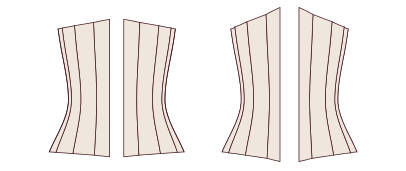
FŰZŐ 109mell alatti fűző elöl és hátul fűzéssel · 8 panel FŰZŐ 110mell fölötti fűző elöl és hátul fűzéssel · 8 panel
FŰZŐ 110mell fölötti fűző elöl és hátul fűzéssel · 8 panel
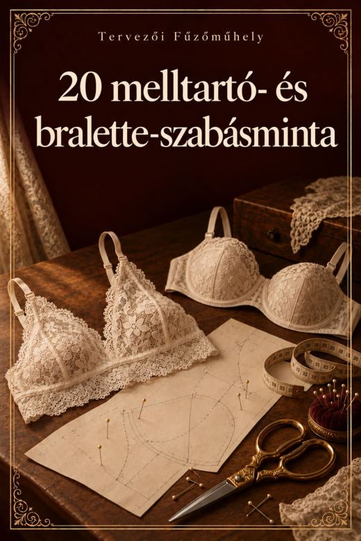
IV. ajándék · 20 melltartó- és bralette-szabásminta
20 szabásminta PDF-ben · mindegyik A4 részekre bontva és plotterre, valós méretben.
Háromszög 6
 MELLTARTÓ 001klasszikus háromszög bralette
MELLTARTÓ 001klasszikus háromszög bralette MELLTARTÓ 002háromszög bralette széles alsó pánttal
MELLTARTÓ 002háromszög bralette széles alsó pánttal MELLTARTÓ 003háromszög bralette keresztezett háttal
MELLTARTÓ 003háromszög bralette keresztezett háttal MELLTARTÓ 004háromszög bralette dupla vállpánttal
MELLTARTÓ 004háromszög bralette dupla vállpánttal MELLTARTÓ 005csipke háromszög bralette íves csipkeszéllel
MELLTARTÓ 005csipke háromszög bralette íves csipkeszéllel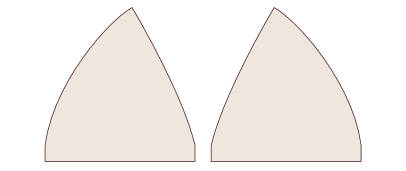
MELLTARTÓ 006átfűzött háromszög bralette kötővel
Halter 2
 MELLTARTÓ 007nyakba kötős halter bralette
MELLTARTÓ 007nyakba kötős halter bralette MELLTARTÓ 008halter bralette alsó pánttal
MELLTARTÓ 008halter bralette alsó pánttal
V-kivágás és keresztezett 2
 MELLTARTÓ 009bralette mély V-kivágással
MELLTARTÓ 009bralette mély V-kivágással MELLTARTÓ 010elöl keresztezett bralette
MELLTARTÓ 010elöl keresztezett bralette
Longline 2
 MELLTARTÓ 011egyenes longline bralette
MELLTARTÓ 011egyenes longline bralette MELLTARTÓ 012longline bralette V-kivágással
MELLTARTÓ 012longline bralette V-kivágással
Bandeau 2
 MELLTARTÓ 013sima bandeau
MELLTARTÓ 013sima bandeau MELLTARTÓ 014bandeau középen ráncolva
MELLTARTÓ 014bandeau középen ráncolva
Formált kosárral 4
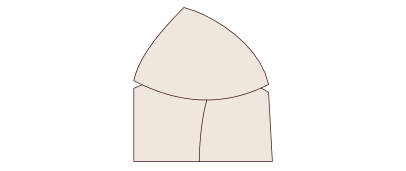
MELLTARTÓ 015merevítő nélküli balconette melltartó (háromrészes kosár) MELLTARTÓ 016merevítő nélküli melltartó függőleges kosárvarrással
MELLTARTÓ 016merevítő nélküli melltartó függőleges kosárvarrással MELLTARTÓ 017merevítő nélküli melltartó egyrészes kosárral
MELLTARTÓ 017merevítő nélküli melltartó egyrészes kosárral MELLTARTÓ 018csipke melltartó kétrészes kosárral
MELLTARTÓ 018csipke melltartó kétrészes kosárral
Sportmelltartó 2
 MELLTARTÓ 019sportmelltartó úszóháttal
MELLTARTÓ 019sportmelltartó úszóháttal MELLTARTÓ 020sportmelltartó keresztezett háttal
MELLTARTÓ 020sportmelltartó keresztezett háttal
V. ajándék · 20 body-szabásminta
20 szabásminta PDF-ben · mindegyik A4 részekre bontva és plotterre, valós méretben.
Body 20
 BODY 001body kerek kivágással · zárt háttal
BODY 001body kerek kivágással · zárt háttal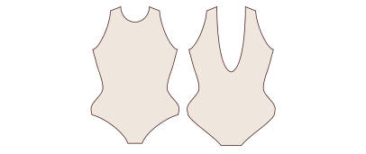
BODY 002body kerek kivágással · mélyen kivágott háttal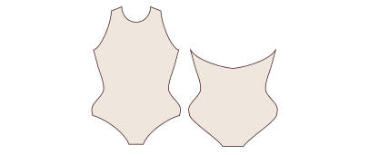
BODY 003body kerek kivágással · keresztezett háttal BODY 004body kerek kivágással · csepp alakú hátkivágással
BODY 004body kerek kivágással · csepp alakú hátkivágással BODY 005body V-kivágással · zárt háttal
BODY 005body V-kivágással · zárt háttal BODY 006body V-kivágással · mélyen kivágott háttal
BODY 006body V-kivágással · mélyen kivágott háttal BODY 007body V-kivágással · keresztezett háttal
BODY 007body V-kivágással · keresztezett háttal BODY 008body V-kivágással · csepp alakú hátkivágással
BODY 008body V-kivágással · csepp alakú hátkivágással BODY 009body négyszögletes kivágással · zárt háttal
BODY 009body négyszögletes kivágással · zárt háttal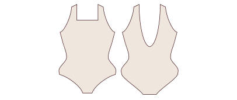
BODY 010body négyszögletes kivágással · mélyen kivágott háttal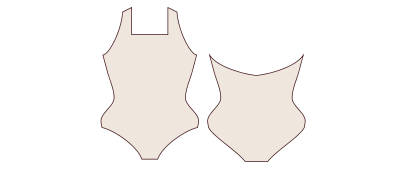
BODY 011body négyszögletes kivágással · keresztezett háttal BODY 012body négyszögletes kivágással · csepp alakú hátkivágással
BODY 012body négyszögletes kivágással · csepp alakú hátkivágással BODY 013body szív alakú kivágással · zárt háttal
BODY 013body szív alakú kivágással · zárt háttal BODY 014body szív alakú kivágással · mélyen kivágott háttal
BODY 014body szív alakú kivágással · mélyen kivágott háttal BODY 015body szív alakú kivágással · keresztezett háttal
BODY 015body szív alakú kivágással · keresztezett háttal BODY 016body szív alakú kivágással · csepp alakú hátkivágással
BODY 016body szív alakú kivágással · csepp alakú hátkivágással BODY 017body nyakba kötő pánttal · zárt háttal
BODY 017body nyakba kötő pánttal · zárt háttal BODY 018body nyakba kötő pánttal · mélyen kivágott háttal
BODY 018body nyakba kötő pánttal · mélyen kivágott háttal BODY 019body nyakba kötő pánttal · keresztezett háttal
BODY 019body nyakba kötő pánttal · keresztezett háttal BODY 020body nyakba kötő pánttal · csepp alakú hátkivágással
BODY 020body nyakba kötő pánttal · csepp alakú hátkivágással
VI. ajándék · 20 bugyiszabásminta: tanga, brazil és francia fazon
20 szabásminta PDF-ben · mindegyik A4 részekre bontva és plotterre, valós méretben.
String 5
 BUGYI 001klasszikus string
BUGYI 001klasszikus string BUGYI 002magas derekú string
BUGYI 002magas derekú string BUGYI 003string oldalpánttal
BUGYI 003string oldalpánttal BUGYI 004csipke string dupla elejével
BUGYI 004csipke string dupla elejével BUGYI 005brazil string V-vonalban
BUGYI 005brazil string V-vonalban
Tanga 5
 BUGYI 006klasszikus, alacsony derekú tanga
BUGYI 006klasszikus, alacsony derekú tanga BUGYI 007közepes derekú tanga
BUGYI 007közepes derekú tanga BUGYI 008tanga széles oldalrésszel
BUGYI 008tanga széles oldalrésszel BUGYI 009kivágott, brazil fazonú tanga
BUGYI 009kivágott, brazil fazonú tanga BUGYI 010tanga dupla pánttal
BUGYI 010tanga dupla pánttal
Brazil bugyi 5
 BUGYI 011klasszikus brazil bugyi
BUGYI 011klasszikus brazil bugyi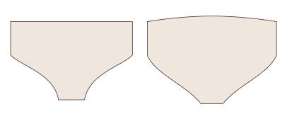
BUGYI 012magas derekú brazil bugyi BUGYI 013kivágott brazil bugyi
BUGYI 013kivágott brazil bugyi BUGYI 014brazil bugyi csipke oldalrésszel
BUGYI 014brazil bugyi csipke oldalrésszel BUGYI 015retró, magas derekú brazil bugyi
BUGYI 015retró, magas derekú brazil bugyi
Francia bugyi 5
 BUGYI 016klasszikus francia bugyi
BUGYI 016klasszikus francia bugyi BUGYI 017magas derekú francia bugyi
BUGYI 017magas derekú francia bugyi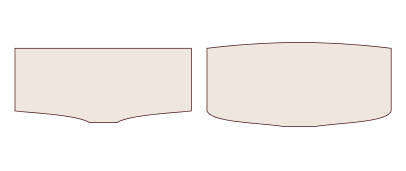
BUGYI 018francia bugyi egyenes szárral BUGYI 019csipke francia bugyi íves széllel
BUGYI 019csipke francia bugyi íves széllel BUGYI 020francia bugyi boxer fazonban
BUGYI 020francia bugyi boxer fazonban
Következő lépés
Mentsd el ezt az oldalt a könyvjelzők közé: ez az örökös hozzáférésed a kollekcióhoz. Válaszd ki az első szabásmintát, nyomtasd ki, és kezdd egy próbadarabbal.